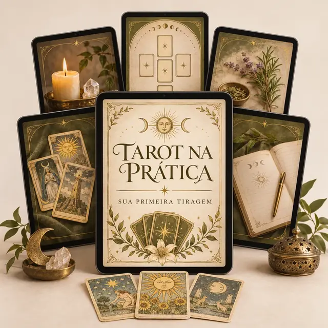
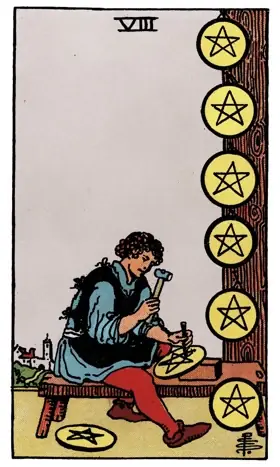
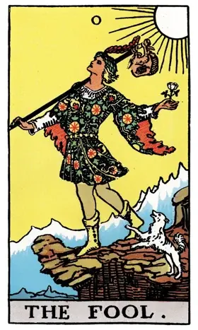
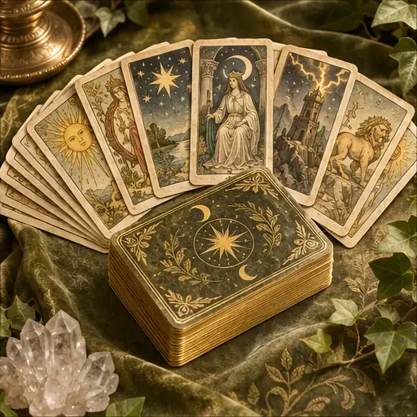
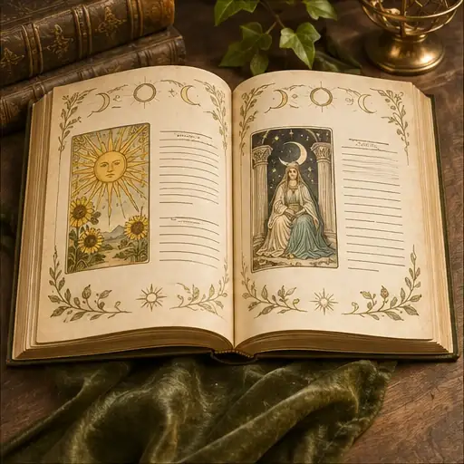
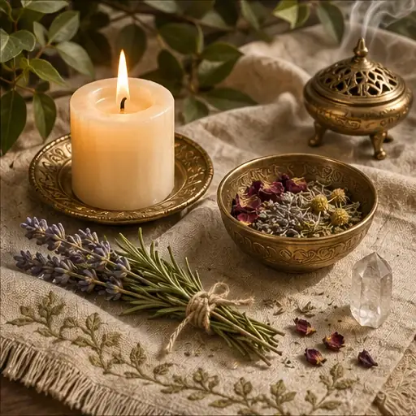
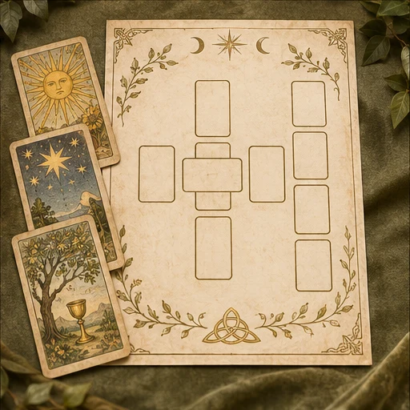
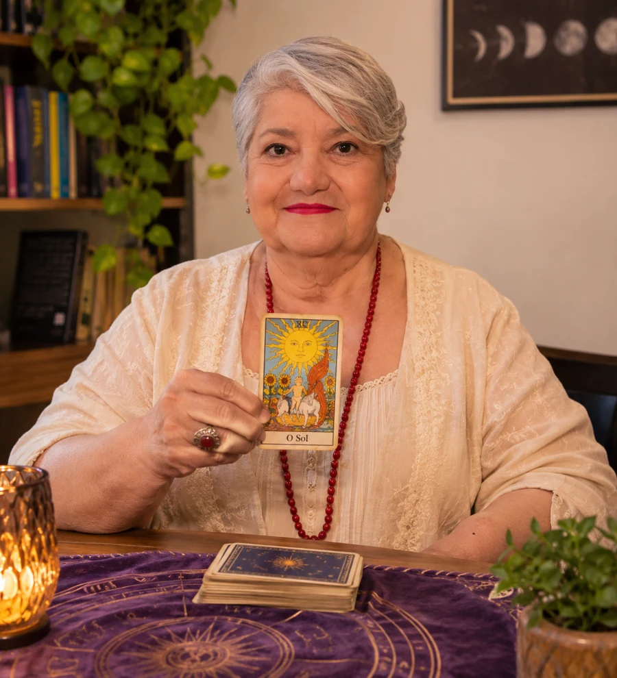

O que está acontecendo
Dois de Ouros
Olhe para a situação atual. No Dois de Ouros, a figura equilibra duas moedas. Entre quais prioridades sua energia afetiva está dividida hoje?
Sua primeira tiragem
Um método de 3 cartas para quem está começando do zero. Sem precisar ter dom, sem experiência e sem comprar baralho.

Quero acessar o kit completoImagine que você fez esta pergunta: “O que preciso enxergar sobre minha vida amorosa agora?”
O que você vê? Uma figura equilibra duas moedas.
O que isso sugere? Talvez sua energia esteja dividida entre o amor e muitas outras demandas.
Ver a tiragem completaO método direto ao ponto
Chega de paralisia na hora de virar as cartas. Faça uma pergunta objetiva, leia as imagens e saia com uma frase que orienta sua próxima atitude.
“O que preciso enxergar sobre minha vida amorosa agora?”
O que está acontecendo
Olhe para a situação atual. No Dois de Ouros, a figura equilibra duas moedas. Entre quais prioridades sua energia afetiva está dividida hoje?
O que merece atenção

Identifique o que pede atenção. O artesão trabalha uma moeda por vez, com cuidado. Que gesto pequeno, repetido com frequência, fortaleceria sua vida amorosa?
O que explorar a seguir

Escolha um próximo passo possível. O viajante está prestes a avançar com leveza. Que conversa ou atitude nova você pode experimentar esta semana?
“Estou dividindo minha energia entre muitas coisas. Esta semana, vou reservar um momento sem pressa para cuidar de quem eu amo — começando por mim.”

Os 22 arcanos maiores e os 56 menores do Rider–Waite–Smith, com nomes em português. Imprima, recorte e comece a praticar.
São 52 páginas ilustradas para formular perguntas, interpretar cada posição e conectar as cartas em uma leitura sua.
Toque nas cartas para revelar cada bônus.

Bônus 01
Consulte as 78 cartas em posição normal e invertida, com pistas visuais, perguntas e exercícios.

Bônus 02
Prepare a mesa, organize seu foco e conheça práticas opcionais de abertura, encerramento e cuidado com o baralho.
Bônus 03
Use perguntas abertas sobre autoconhecimento, relacionamentos, trabalho, decisões e ciclos da vida.

Bônus 04
Use os modelos de Sim ou Não, Três Cartas, Enamorados e Cruz Celta, com exemplos comentados e uma folha de registro.
Bônus 05
Registre suas leituras em sete fichas e revise os padrões que aparecem ao longo da semana.

Quem criou o método
Um método criado para quem nunca tocou num baralho. Leitura tradicional, sem regras excessivas e sem mistério desnecessário — para você ter suas próprias respostas.
Helena viu tendências passarem e manteve a leitura tradicional no centro da prática. Para ela, complicar o tarot com regras demais só adia o momento em que você se senta à mesa e vira a primeira carta.
O kit coloca essa abordagem em prática com um roteiro visual, direto e simples. Você começa com uma pergunta, lê três cartas e escreve sua própria resposta sem precisar decorar o baralho.
Ver a oferta do kitKit digital completo
O baralho é seu. O método é seu. O conhecimento fica com você. Leve o guia da primeira tiragem, as 78 cartas para imprimir e os cinco bônus.
Você recebe 8 materiais
+ 5 bônus inclusos
De R$ 97 por apenas
R$ 27,90
Pagamento único · Material 100% em português
🛡 Garantia de 7 dias: se não fizer sentido para você, devolvemos 100% do seu dinheiro.
Quero acessar o kit completo agoraVocê pode começar do zero. O guia acompanha você desde a escolha da pergunta até a interpretação das três cartas.
O kit inclui as 78 cartas em um PDF com folhas A4 para imprimir e recortar. Se você já tem um baralho de tarot, pode praticar com ele.
Você pode começar pela imagem e pela posição de cada carta. O guia das 78 cartas serve de apoio quando surgir uma dúvida.
É um guia digital com exercícios e materiais imprimíveis. Você pode ir direto à tiragem comentada e praticar no mesmo dia.
Sim. Escolha uma situação que você quer explorar, faça a tiragem e use o diário para registrar suas observações e um próximo passo.
Não. O tarot é uma linguagem de imagens e qualquer pessoa aprende a ler com um método simples. Sua primeira tiragem é a prova disso.
Neste kit, o tarot é usado como ferramenta de reflexão e autoconhecimento, não como previsão do futuro. Muitas pessoas de diferentes crenças usam dessa forma.
Nenhuma carta é “maldição”. O guia mostra como ler as cartas difíceis como pontos de atenção, sem medo.
Sim. Você tem 7 dias para testar. Se não gostar, pede o reembolso.